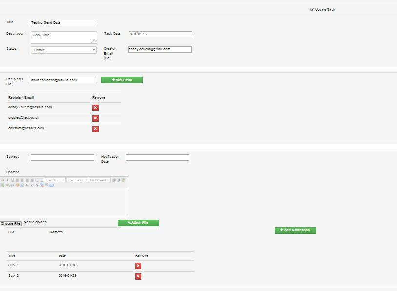

TaskUs Email Scheduler User guide
Introduction
This Application is designed to help users to create email/s and select a schedule on when should the recipient/s receive it. Users also will have the capability of updating the schedule and email contents. They can also deactivate a scheduled email task. At 5:00 AM every day, the scheduler checks for any email that is scheduled to be sent or has been already due. Then it will be automatically sent using the noreply@taskus.com email, having the creator added on cc.
Added feature is a reporting section which can track all email tasks under the following statuses:
Sent
Sent Failed
On Queue
Direct link : http://52.76.5.245/tasknotifier/view
Creating New Task
On the Menu tab, select Create Task.
A form will appear which allow the user to input the following information.
Add a recipient by adding an email address on the Email List. Enter email address and click Add Email. You can enter multiple email addresses separated by space. To remove an email address on the list, click the Remove button next to it.
Schedule an email by adding notifications on Notification List. Enter Subject, Notification Date, and Content, you can also add attachments by clicking the Choose File button and select the file on your local folder then click Attach. Click Add Notification to create the task.
Click Save button to save the Task.
My Task (View Existing Tasks)
To view existing tasks list, select My Task in the menu tab.
List of existing tasks will appear.
You can filter the list by entering your filter key in Search text box provided on the top of the page.
You can edit and remove an existing task using the control buttons.
Update Existing Task
Click My Task, then click the Update Button (Blue Button with pencil icon) next to the task that you want to update.
This will show information of the selected task.

Do some changes and click Save button to apply changes.
Email Reports
To generate report, select Email Report on the menu.
Filter the data by defining the Sender for the sender of the email, Status for notification status, Date From, and To date of the notification. Filter fields are optional. Filtering data with single date, just define the Date From.
Click Generate Button to generate the report. If click filters are empty, all tasks will show on the report.
Click Export to Excel button to extract the data using MS excel format.
Sending Notification
Once a notification is set, it is now ready to be sent on the set date.
The recipient(s) will receive the email/s at 5:00AM on the set date.
The creator of the notification will also receive a copy of the notification for confirmation. The status of the notification will automatically change into “Send”.
If the email was not sent successfully, the status will change to “Sending Failed”, you can contact I.S team to resend the email again (or email dandy.collera@taskus.com).